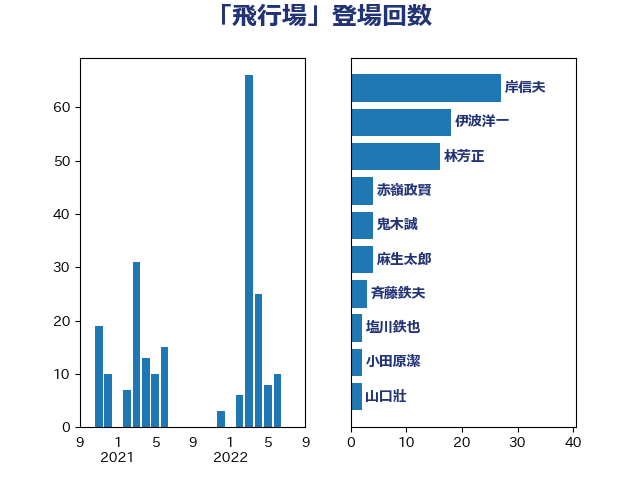

単語「飛行場」

| 岸信夫 | 自由民主党 | 27 回 |
| 伊波洋一 | 無所属 | 18 回 |
| 林芳正 | 自由民主党 | 16 回 |
| 赤嶺政賢 | 日本共産党 | 4 回 |
| 鬼木誠 | 立憲民主党 | 4 回 |
| 麻生太郎 | 自由民主党 | 4 回 |
| 斉藤鉄夫 | 公明党 | 3 回 |
| 塩川鉄也 | 日本共産党 | 2 回 |
| 小田原潔 | 自由民主党 | 2 回 |
| 山口壯 | 自由民主党 | 2 回 |
| 田村貴昭 | 日本共産党 | 2 回 |
| 篠原豪 | 立憲民主党 | 2 回 |
| 茂木敏充 | 自由民主党 | 2 回 |
| 菅義偉 | 自由民主党 | 2 回 |
| 赤羽一嘉 | 公明党 | 2 回 |
| 高良鉄美 | 無所属 | 2 回 |
| 上月良祐 | 自由民主党 | 1 回 |
| 城井崇 | 立憲民主党 | 1 回 |
| 宮崎政久 | 自由民主党 | 1 回 |
| 有村治子 | 自由民主党 | 1 回 |
| 松原仁 | 立憲民主党 | 1 回 |
| 浦野靖人 | 日本維新の会 | 1 回 |
| 渡辺周 | 立憲民主党 | 1 回 |
| 田島麻衣子 | 立憲民主党 | 1 回 |
| 田村智子 | 日本共産党 | 1 回 |
| 福田昭夫 | 立憲民主党 | 1 回 |
| 穀田恵二 | 日本共産党 | 1 回 |
| 自見はなこ | 自由民主党 | 1 回 |
| 芳賀道也 | 国民民主党 | 1 回 |
| 西銘恒三郎 | 自由民主党 | 1 回 |
| 高橋光男 | 公明党 | 1 回 |
| 高橋千鶴子 | 日本共産党 | 1 回 |